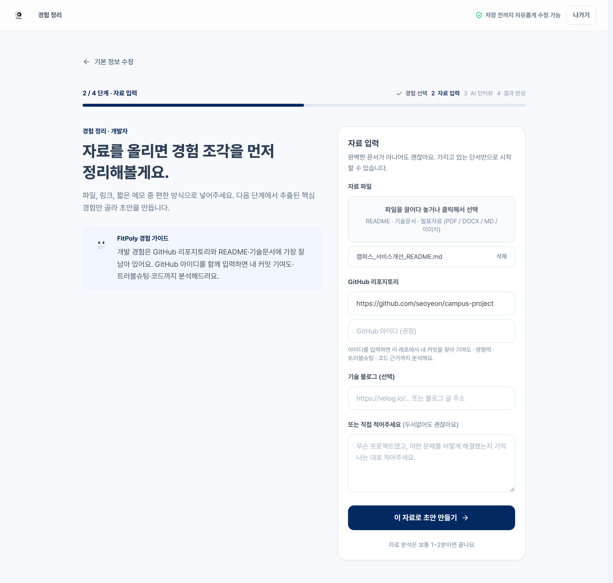
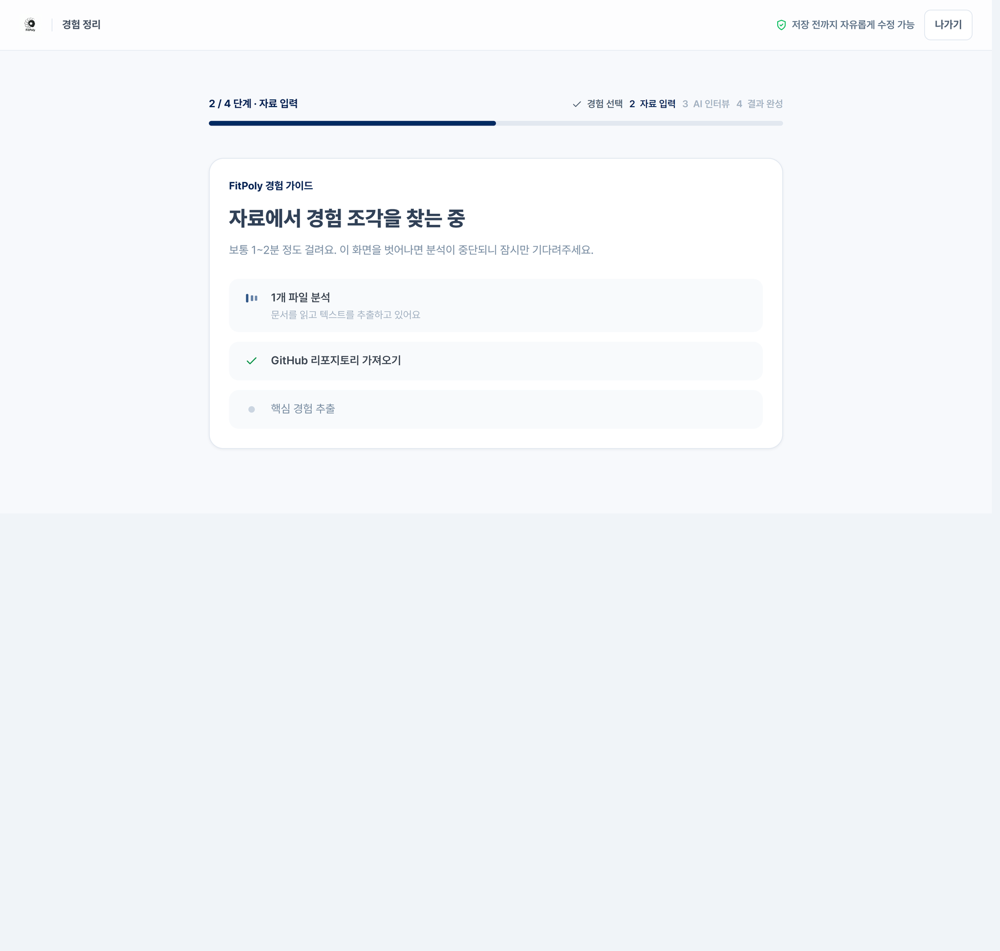
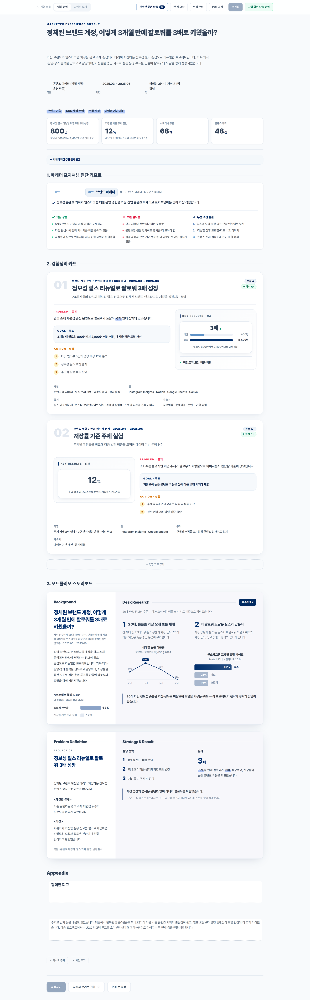
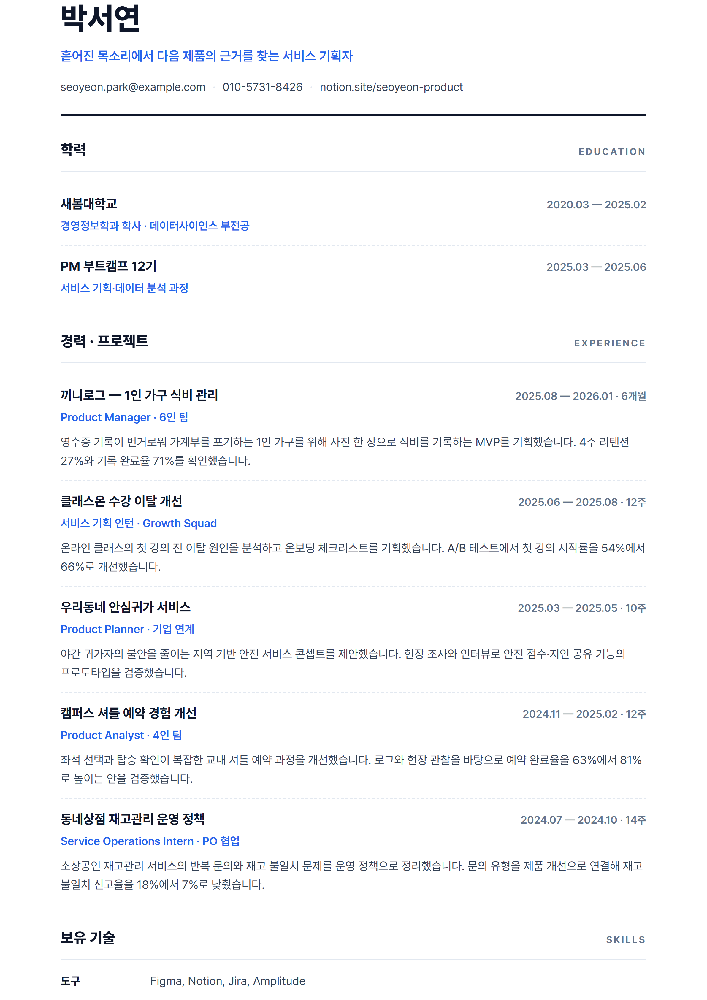
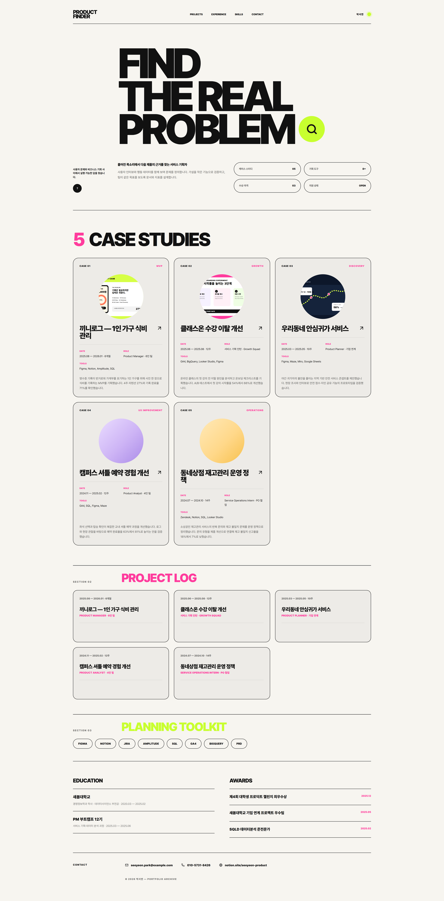
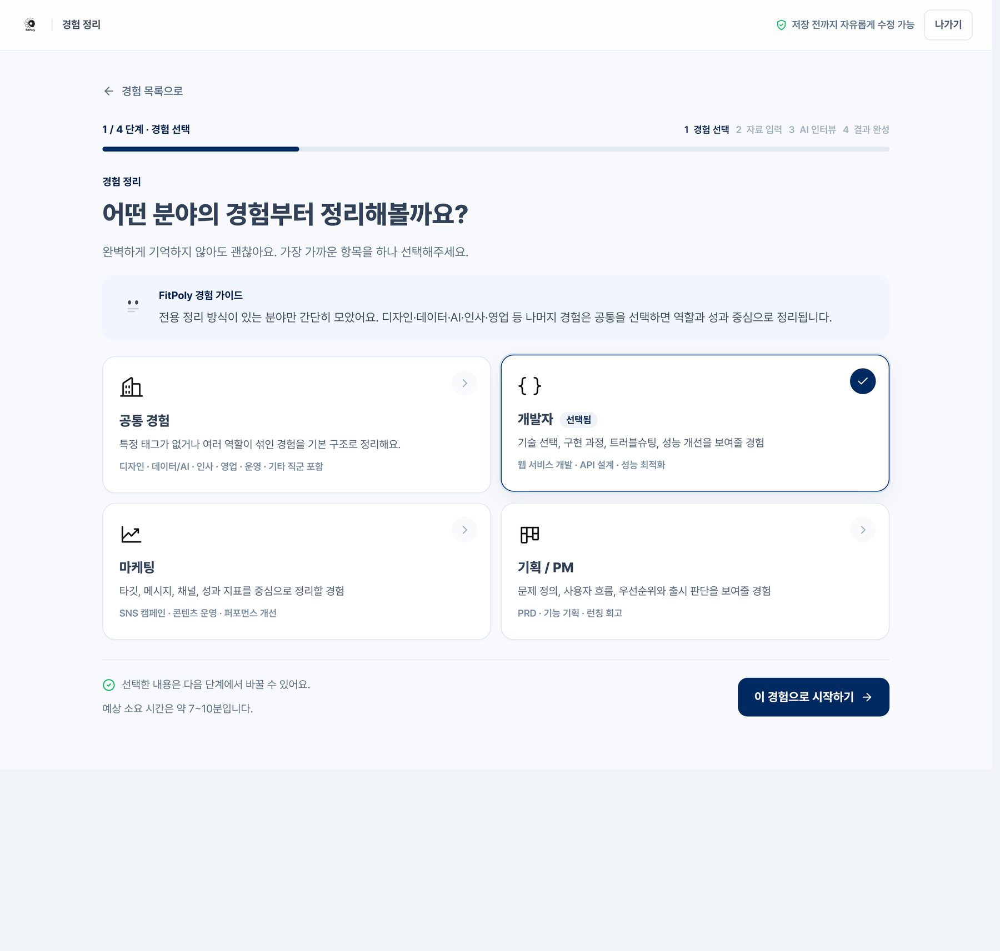

SERVICE OVERVIEW
과제·공모전·사이드 프로젝트로 흩어진 자료를 그대로 넣으면, AI가 역할·과정·성과를 찾아 정리하고 이력서와 웹 포트폴리오까지 만들어 줍니다.
넷 중 편한 것 하나만 넣어도 됩니다

파일 · 링크 · 메모를 한 화면에서 받습니다
보통 1~2분이면 끝납니다

읽는 과정을 그대로 보여 줍니다

경험정리 결과
문제 → 목표 → 실행 → 성과(PAR)와 포지셔닝 진단

이력서 PDF
학력 · 경력 · 성과 문장까지 채워진 채로 바로 제출

웹 포트폴리오
직군에 맞는 템플릿으로 렌더링된 공개 링크
한 경험당 약 7~10분 · 자료가 완벽하지 않아도 시작할 수 있고, 저장 전까지 자유롭게 고칠 수 있습니다
아래는 모두 FitPoly가 실제로 렌더한 화면입니다. 분야를 고르고 가진 자료를 넣으면 나머지는 기다리기만 하면 됩니다.

경험 선택
정리할 분야를 하나 고르면 개발자 · 마케팅 · 기획 등 직군 기준으로 읽습니다.
자료 입력
문서 · GitHub · 링크 · 짧은 메모 중 편한 것만 넣으면 됩니다.
AI 분석
자료와 커밋을 읽어 역할 · 과정 · 성과를 찾아냅니다. 보통 1~2분.
결과 완성
성과 지표 · 포지셔닝 진단 · 핵심 강점 3가지가 정리된 경험 카드로 남습니다.
이 결과가 그대로 경험정리 결과 · 이력서 PDF · 웹 포트폴리오 세 가지가 됩니다
fitpoly.kr/p/내아이디 링크 하나로 제출하고, 공개 여부는 본인이 직접 켜고 끕니다